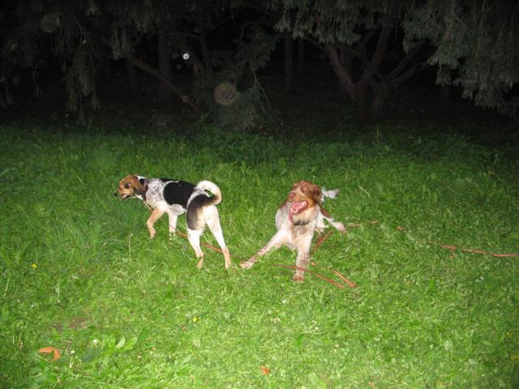
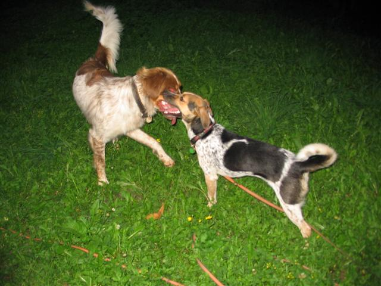
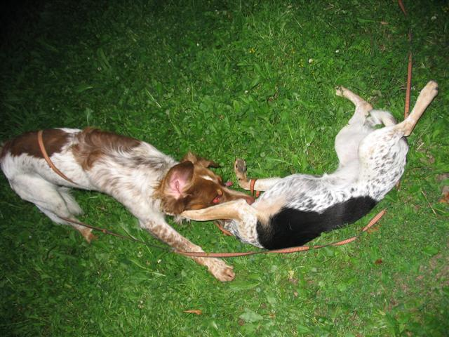
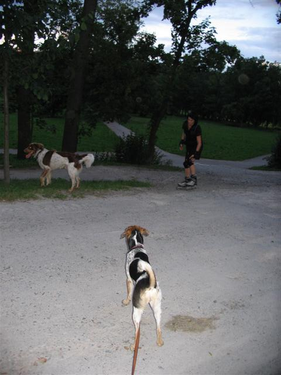

Navigace |
Psí a jiná setkáníAspoň pár nerozmazaných fotek z řádění Nely s Bertem Kyjský hrádek.  Jak jste si jistě povšimli, Bert je hnědo-žluto-bílý dlouhosrstý ČSP. S Nelou jsou skoro stejně staří (Bert je straší jen o 3 mesíce), ale vzhledově jsou diametrálně odlišní nejen zbarvením a délkou srtsi, ale hlavně váhovou kategorií:-) Nela je oproti Bertíkovi poloviční, což nám úplně vyhovuje, protože se tím optimálně kompenzuje její hravá náruživost. a Bert měl dokonce chvílemi navrch.  Jestli si kladete otázku, jak moc se zamotává stopovačka při strakatém řádění, pak odpověd zní ...
 ...značně:-) Nikdy jsem nechodila do skautu, takže uzly neumím, ale rozmotávat už jsem se naučila výtečně.
 Nela na stráži.
Nela vesele pokračuje v hárání a my jen doufáme, že včas odhadneme období, kdy budeme muset být nejbdělejší. Je to trochu složité tím spíš, že Nela je zvyklá na každodenní psí hrátky, které jí při vší své snaze nedokážeme zcela vynahradit - máme jen dvě nohy a nejsme zkrátka tak rychlí, ani se neválíme po zemi:-) Jinak si v praxi ověřujeme, že fenky jsou při hárání divné, jak jsme všudemožně vyčetli. I Nela se tváří přesvědčivě bolestně a tu a tam kňučí či blumí takovým způsobem, že už jsem vážně uvažovala o tom, že ji vezmu na veterinu. Což mi připomnělo Belu Velký dar, která si také při hárání "vyštěkala" návštěvu veteriny, kde se ukázalo, že je zcela zdravá :-) No uvidíme, nejzajímavější fáze nás ještě čeká. Momentálně Nela spokojeně spí v "boudě", tj.pod pracovním stolemv pelíšku a tu a tam zavrčí, když zaslechne hlasy zvenčí, aby mi dokázala, že je "dobrý hlídač", jak bývá strakáč charakterizován. O tom vůbec nepochybujeme, zvlášť poté, co při nedávné návštěvě u Rudolfových rodičů štěkala na přicházející bratrance a sestřenice tak hlasitě a působivě, že utekli do koupelny. Nejdřív nám nevěřili, že je nesežere za živa, ale pak si s ní začali hrát. Později se spíš situace obrátila, když po hodině honiček po domě a zahradě se k nám Nela přibíhala schovat nebo bezradně klopila uši, když neveděla, zda má poslechnout "sedni" od deselitého bratrance vpravo, nebo "ke mně" od čtyřletého synovce vlevo.
|